Upward is a free mod for Project Highrise. After closing time, shops pull their shutters down and lights follow the people inside. Building also takes a lot fewer clicks, and nothing in the original game is replaced.
Every feature can be switched off or tuned in the config file.
After hours, every store and restaurant pulls down an animated steel shutter, turns its lights off and shows a CLOSED sign. 69 of the 71 storefronts have their own closed facade.
Real garage-door recordings play when a shop opens or closes. You only hear the ones on screen, louder when you zoom in and panned left or right. They follow the game's effects volume.
Lights stay on only while someone is awake at home. They go off when everyone leaves or goes to bed, with a short delay so they don't flicker. You can switch to a fixed schedule instead.
Offices switch their lights off one by one after work hours. Services like the spa, gallery and florist dim their lights when closed, and vacant hotel rooms stay dark.
Rooftop restaurants get a night-blue tint at night instead of a shutter, so the sky behind them stays visible.
Select a room and drag across a floor to build several side by side. A single click still works as before.
Shift+click a furnishing option to furnish every other vacant hotel room or apartment of the same type and size. Each one is charged until you run out of money.
Press V or use the new HUD button, then click anything already built to start building the same item. No more digging through the build menu.
A finished electrical or plumbing closet lays its lines across the whole floor for free, so you only pay for the closet. Old saves get completed when you load them.
Power, water, cable, gas and phone hookups supply 25 / 100 / 300 instead of 10 / 50 / 150. HVAC is unchanged.
The Ice Cream Stand, Smoothie Bar, art rooms and indoor artwork can now be built below ground.
Press F8 and drag over built floor to soundproof it tile by tile. Noise on painted tiles is cleared and stops spreading up and down. Hold Shift to remove.
Press F9 to put event spaces on autopilot with your ticket price. A free space books the cheapest performer or corporate event, but only when a performer suite is free.
Restaurant smell spreads sideways only, never up or down.
Apartments and offices ask for plumbers, florists, IT and so on 40% less often. Hotel rooms are unchanged.
Housekeeping, Room Service Kitchen and Luggage Service get 1.5× the workers. This also applies to services in old saves.
These are a few of the 69 closed facades the mod shows when a store closes for the night. Scroll sideways to walk down the street.
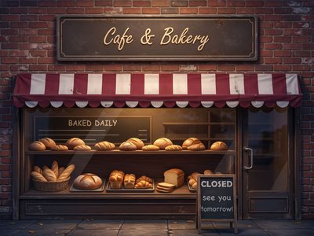
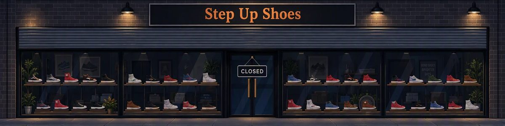
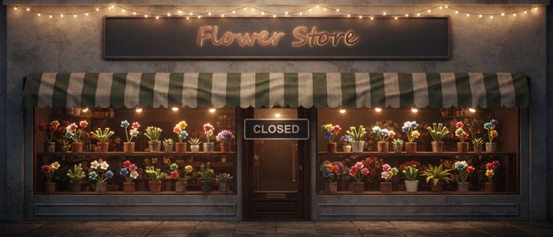
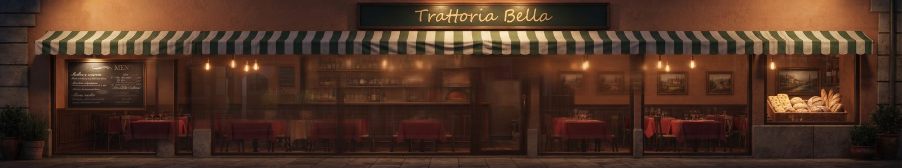
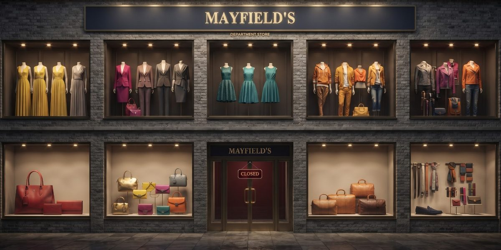
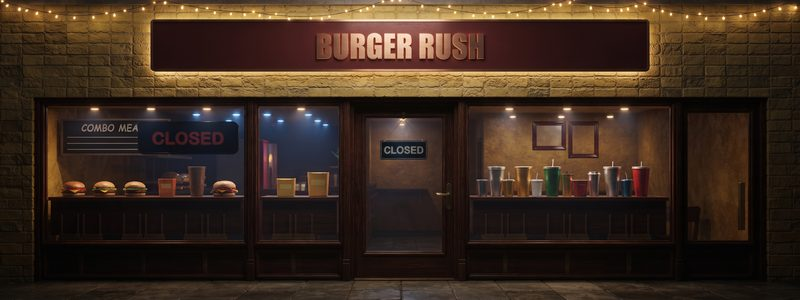
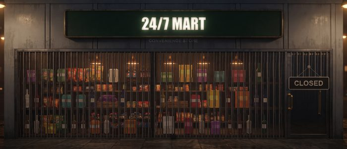
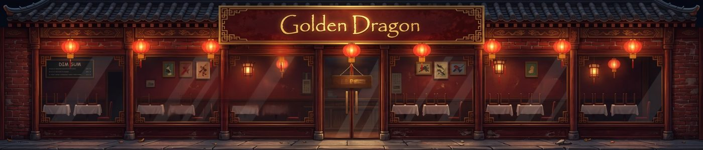
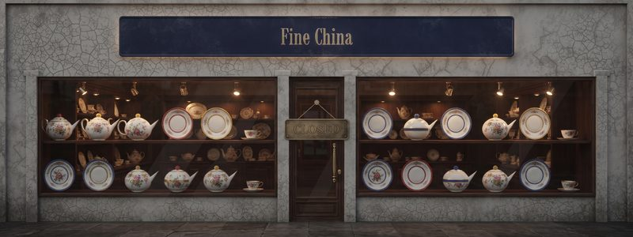
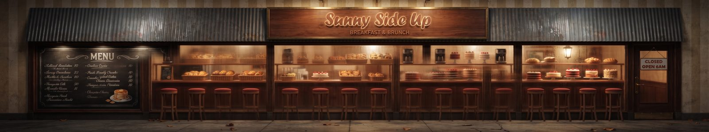
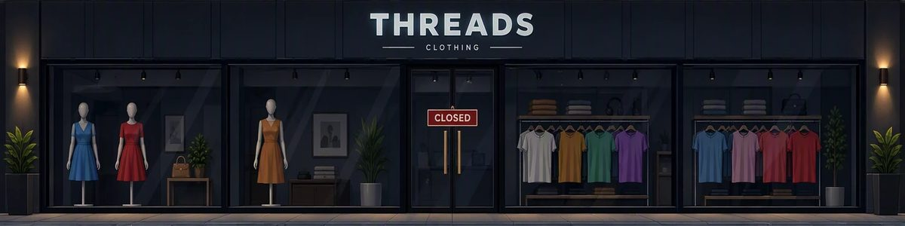
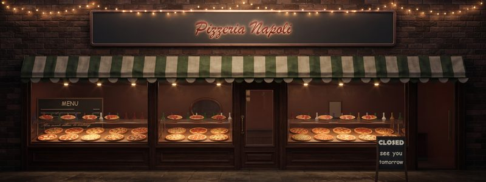
Want your own art? Replace any PNG in plugins\Upward\textures\closed\ with an image of the same size.
BepInEx, the mod loader Upward runs on, is already inside the download.
Upward-1.3.0.zipGet it from the Releases page.
In Steam, right-click Project Highrise → Manage → Browse local files. It's the folder with Game.exe.
Let it merge folders.
Start the game from Steam as usual. To check that the mod loaded, look for Upward 1.3.0 carregado in BepInEx\LogOutput.log.
Project Highrise\ ├─ Game.exe ├─ winhttp.dll BepInEx ├─ doorstop_config.ini BepInEx └─ BepInEx\ ├─ core\ └─ plugins\ └─ Upward\ ├─ Upward.dll ├─ sounds\ └─ textures\
Upward-1.3.0-plugin-only.zip and extract it into BepInEx\plugins\. Project Highrise is a 32-bit game, so you need the x86 build of BepInEx. The x64 build won't load.BepInEx\plugins\Upward. Your saves keep working: utility lines and furniture the mod placed are normal game objects.After the first launch, open BepInEx\config\upward.projecthighrise.cfg in any text editor while the game is closed. Section and key names are in Portuguese, so here's what each one means.
| Section | Key | Default | What it does |
|---|---|---|---|
| Lojas | ArteDeFechada | true | Shutter, lights off and CLOSED sign after hours |
| Lojas | EscritoriosApagamLuzes | true | Offices turn their lights off after hours |
| Lojas | ServicosApagamLuzes | true | Services dim their lights after hours |
| Lojas | DuracaoAnimacaoPorta | 0.6 | Shutter animation length (real seconds) |
| Hotel | QuartosVagosApagados | true | Vacant hotel rooms are dark |
| Apartamentos | ApagarDeMadrugada | true | Apartments turn their lights off |
| Apartamentos | SeguirMoradores | true | Lights follow residents; false uses fixed hours |
| Apartamentos | DuracaoLuz | 0.2 | Light fade time (real seconds) |
| Apartamentos | AtrasoApagarMinutos | 3 | Game minutes to wait before lights go off |
| Apartamentos | HoraApagar | 0 | Lights-off hour with fixed hours (23.5 = 23:30) |
| Apartamentos | HoraAcender | 6 | Lights-on hour with fixed hours |
| Cheiro | NaoPassaEntreAndares | true | Smell does not spread between floors |
| Sons | Ativado | true | Enable Upward's sounds |
| Sons | Volume | 0.8 | Volume of Upward's sounds (0–1) |
| Utilidades | LinhasAutomaticas | true | Closets lay their lines across the floor for free |
| Utilidades | CompletarSavesAntigos | true | Complete utility lines when loading a save |
| Utilidades | LigacoesMaiores | true | Bigger utility meter capacities |
| Ruido | LajeAntirruido | true | Enable soundproof floor painting |
| Ruido | PrecoPorCasa | 200 | Soundproofing price per tile |
| Ruido | Tecla | F8 | Key for soundproofing mode |
| Construcao | ArrastarSalas | true | Drag to build rooms |
| Construcao | MobiliarTodos | true | Shift+click to furnish all vacant spaces |
| Construcao | ContaGotas | true | Pipette button |
| Construcao | TeclaContaGotas | V | Key that arms the pipette |
| Construcao | LojasNoSubsolo | true | Allow some shops and art underground |
| Eventos | BookingAutomatico | true | Auto booking panel for event spaces |
| Eventos | Tecla | F9 | Key for the auto booking panel |
| Servicos | FrequenciaPedidos | 0.6 | Service request frequency (1 = original game) |
| Servicos | FuncionariosHotel | 1.5 | Hotel service staff multiplier (1 = original game) |
Full release notes and older downloads are on GitHub Releases.